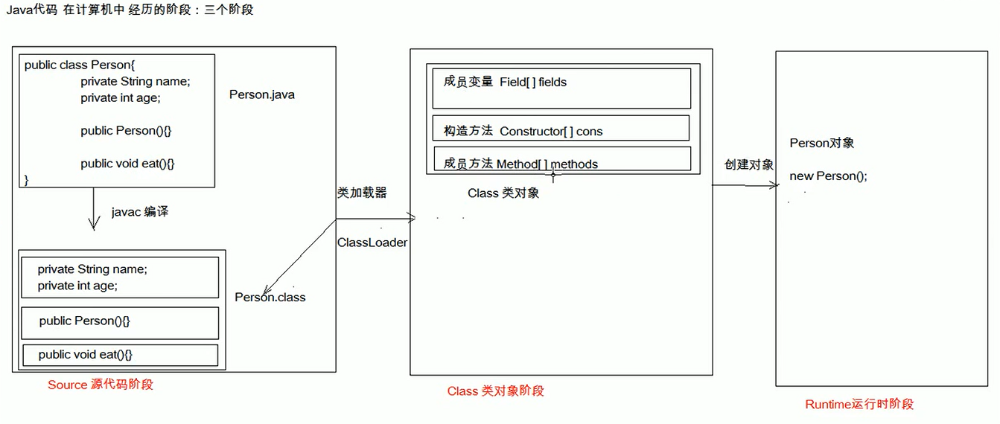

从大二刚开始接触java，了解其基本语法，到用swing编写图形界面的程序，到JavaWeb用SSH三大框架编写小网站，后面又学SSM,SpringBoot,SpringCloud等。可以说算是对java也不断的了解了，慢慢的入了java这个大坑，感觉还不错😂。虽然学的东西越来越多，但是还是有必要时不时回顾下一些基础。
反射库(reflection library) 提供了一个非常丰富且精心设计的工具集，以便编写能够动态操纵Java代码的程序。这项功能被大量地应用于JavaBeans中，它是Java组件的体系结构。使用反射，Java可以支持Visual Basic用户习惯使用的工具。特别是在设计或运行中添加新类时，能够快速地应用开发工具动态地查询新添加类的能力。能够分析类能力的程序被称为反射(reflective)。反射机制的功能极其强大。
利用反射机制可以：
●在运行中分析类的能力。
●在运行中查看对象，例如，编写一个toString方法供所有类使用。
●实现数组的操作代码。
●利用Method对象，这个对象很像C++中的函数指针。——《Java核心技术 卷1 第八版》
更简单的描述：
反射：将类的各个组成部分封装为其它对象。(其它对象指Class类对象)

在三个阶段分别对应不同的获取方法：
多用于配置文件。
static Class<?> forName(String className)
//Returns the Class object associated with the class or interface with the given string name.
static Class<?> forName(String name, boolean initialize, ClassLoader loader)
//Returns the Class object associated with the class or interface with the given string name, using the given class loader.多用于传参。
java.lang.Object java.lang.Class<T>
/*
*Type Parameters:
*T - the type of the class modeled by this Class object.
*For example, the type of String.class is Class<String>.
* Use Class<?> if the class being modeled is unknown.
*/Class<?> getClass()
//Returns the runtime class of this Object.注：不论通过以上哪一种方式获取的Class对象，同一个字节码文件(* .class)在一次程序运行过程中，只会被加载一次。
获取公有的成员变量：
Field getField(String name)
//Returns a Field object that reflects the specified public member field of the class or interface represented by this Class object.
Field[] getFields()
//Returns an array containing Field objects
//reflecting all the accessible public fields of the class or interface represented by this Class object.获取该类下的所有成员变量：
Field getDeclaredField(String name)
//Returns a Field object that reflects the specified declared field of the class or interface represented by this Class object.
Field[] getDeclaredFields()
//Returns an array of Field objects reflecting all the fields declared by the class or interface represented by this Class object. 获取公有的构造方法
Constructor<T> getConstructor(Class<?>... parameterTypes)
//Returns a Constructor object that reflects the specified public constructor of the class represented by this Class object.
Constructor<?>[] getConstructors()
//Returns an array containing Constructorobjects reflecting all
//the public constructors of the class represented by this Class object.获取该类下所有的构造方法
Constructor<T> getDeclaredConstructor(Class<?>... parameterTypes)
//Returns a Constructor object that reflects the specified constructor of the class or interface represented by this Class object.
Constructor<?>[] getDeclaredConstructors()
//Returns an array of Constructor objects reflecting all the constructors declared by the class represented by this Class object.
获取公有的成员方法：
Method getMethod(String name, Class<?>... parameterTypes)
//Returns a Method object that reflects the specified public member method of the class or interface represented by this Class object.
Method[] getMethods()
//Returns an array containing Method objects reflecting all the public member methods of the class or interface represented by this Class object,
//including those declared by the class or interface and those inherited from superclasses and superinterfaces.获取所有的成员方法：
Method[] getDeclaredMethods()
//Returns an array of Method objects reflecting all the methods declared by the class or interface represented by this Class object.
Class<?> getDeclaringClass()
//If the class or interface represented by this Class object is a member of another class, returns the Class object representing the class in which it was declared.
int getModifiers()
// 获取修饰符
// 数字形式的public, protected, private, final, static, abstract and interface;
// 可调用Modifier类中方法将其转为可识别的字符表示
// Returns the Java language modifiers for this class or interface,
// encoded in an integer.
String getName()
// 获取类名（eg:java.lang.String）
// Returns the name of the entity (class, interface, array class, primitive type, or void)
// represented by this Class object, as a String.
String getSimpleName()
// 获取简单类名
// Returns the simple name of the underlying class as given in the source code.
T newInstance()
// 创建该类的无参构造方法
// Creates a new instance of the class represented by this Class object.
Package getPackage()
// 获取包
// Gets the package for this class.设置忽略访问权限修饰符的安全检查
public static void setAccessible(AccessibleObject[] array,
boolean flag) throws SecurityException
/*
*Convenience method to set the accessible flag for an array of objects with a
*single security check (for efficiency).
*First, if there is a security manager, its checkPermission method is called with a
*ReflectPermission("suppressAccessChecks") permission.
*
*A SecurityException is raised if flag is true but accessibility of any of the
*elements of the input array may not be changed (for example, if the element
*object is a Constructor object for the class Class). In the event of such a
*SecurityException, the accessibility of objects is set to flag for array elements
*upto (and excluding) the element for which the exception occurred; the
*accessibility of elements beyond (and including) the element for which the
*exception occurred is unchanged.
*/
Object get(Object obj)
// 获取field值
// Returns the value of the field represented by this Field, on the specified object.
void set(Object obj, Object value)
// 设置field值
// Sets the field represented by this Field object on the specified object argument to the specified new value.T newInstance(Object... initargs)
// 创建对象
// Uses the constructor represented by this Constructor object
// to create and initialize a new instance of the constructor's declaring class,
// with the specified initialization parameters.Object invoke(Object obj, Object... args)
// 调用当前Method对象中的方法
// Invokes the underlying method represented by this Method object,
// on the specified object with the specified parameters.
demo.properties
className=demo.Student
methodName=listenReflectDemo
**
* @ClassName demo.ReflectDemo
* @Description TODO
* @Author flytree
* @Date 2019/9/3 19:48
*/
public class ReflectDemo {
public static void main(String[] args) throws Exception {
// 1.加载配置文件
Properties properties = new Properties();
// 1.1创建Properties对象
// 1.2加载配置文件并转换为一个集合
// 1.2.1获取class目录下的配置文件
ClassLoader classLoader = ReflectDemo.class.getClassLoader();
InputStream stream = classLoader.getResourceAsStream("demo.properties");
properties.load(stream);
// 2.获取配置文件中定义的数据
String className = properties.getProperty("className");
String methodName = properties.getProperty("methodName");
// 3.加载此类进入内存
Class cls = Class.forName(className);
// 4.创建对象
Object obj = cls.newInstance();
// 5.获取方法对象
Method method = cls.getMethod(methodName);
// 6.执行方法
method.invoke(obj);
}
}
参考
JavaAPI：api=jdk_7u4